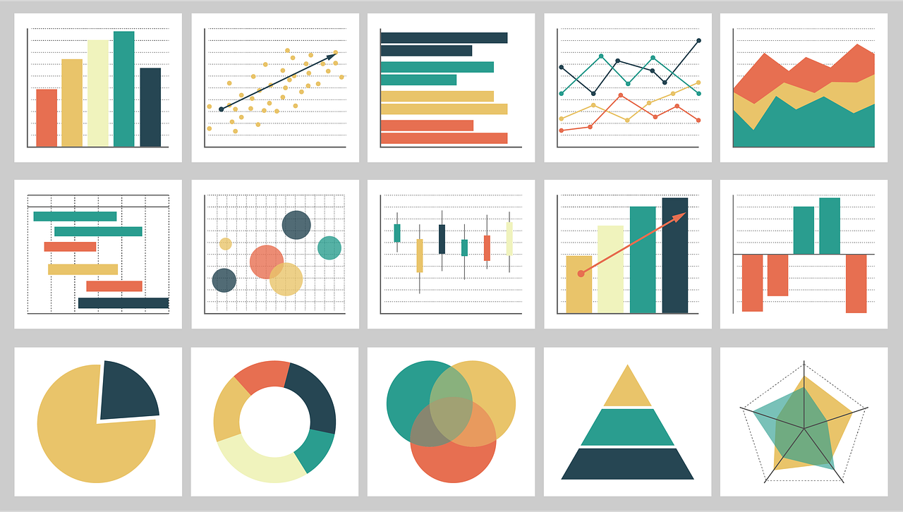
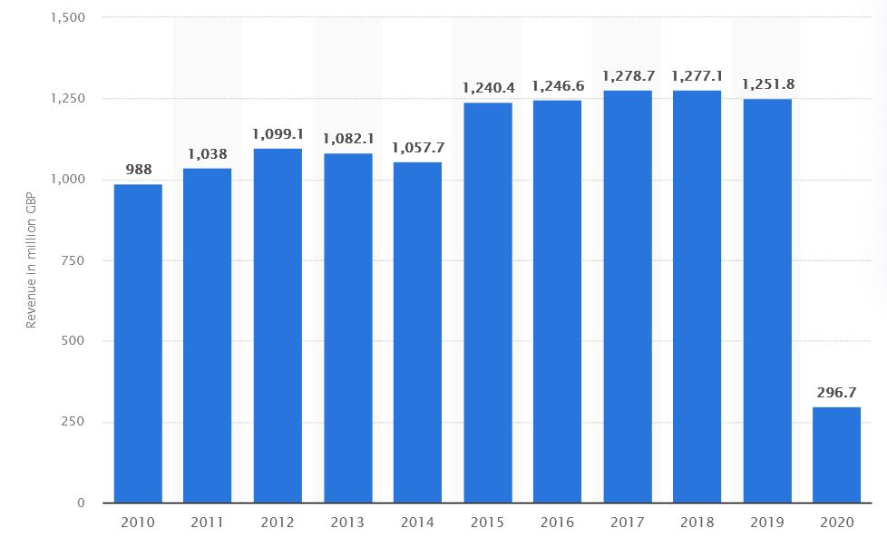
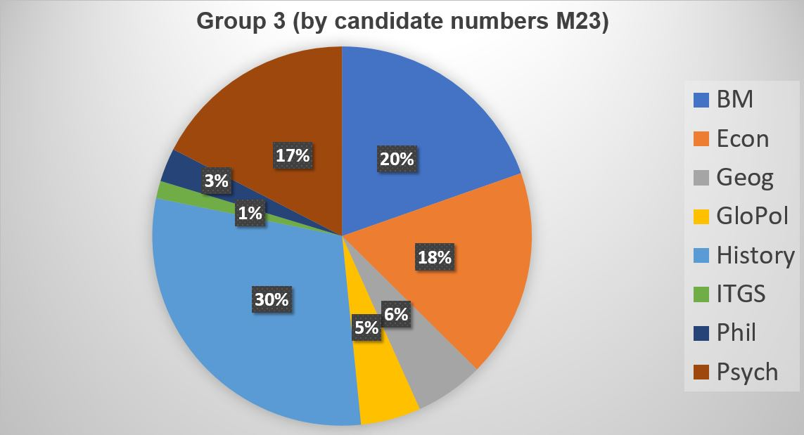

IB Docs (2) Team
IB Docs (2) Team

BMT 7 - Descriptive statistics

Descriptive statistics are statistical tools used in Business Management to summarize and present statistical data in a user-friendly way. The purpose is to enable managers and decision makers to interpret and analyse the data more easily and to support them in making non-biased (rational), objective, evidence-based, and well-informed decisions. Examples of descriptive statistics include the use of the following methods:
Averages, i.e., mean, mode, and median measures of the average values in a data set
Graphical tools, such as bar charts, pie charts, and infographics to visually represent the data, and
Statistical measures of dispersion or spread of numbers in a data set, such as quartiles and standard deviation.
Case study - InThinking Business Management
As an example, here are some descriptive statistics from the InThinking Business Management website, benchmarked against the site average for all InThinking subject websites, as of 31st July 2023.
Table 1 - Selected benchmark data from InThinking subject websites
Data item | Business Management | Site average |
Registered schools | 991* | 749 |
Registered teachers | 1,886 | 1,598 |
Registered students# | 10,861 | 3,963 |
Free trials | 15 | 5 |
Percentage of teachers using Student Access | 38% | 23% |
Schools using Student Access | 52% | 39% |
Number of qBank questions (MCQ) | 1,976 | 573 |
Images / photos | 3,898 | 1,956 |
PDF documents | 405 | 608 |
Quizzes created | 1,554 | 1,545 |
Number of site pages | 933 | 794 |
Free pages | 14% | 11% |
Blogs | 63 | 97 |
Newsletter subscribers | 2,657 | - |
Number of words | 1,266,201 | 681,335 |
# Subscribing schools can activate Student Access for free, enabling all their students to access the website.
Table 2 - Countries with the highest number of subscribing schools to InThinking Business Management
| Ranking | Country | No. of schools |
| 1 | USA | 130 |
| 2 | China | 81 |
| 3 | India | 79 |
| 4 | Spain | 49 |
| 5 | Australia | 37 |
| 6 | United Arab Emirates | 32 |
| 7 | UK | 26 |
| 8 | Indonesia | 24 |
| 9 | Egypt | 23 |
| 10 | Canada | 21 |
The IB syllabus refers to the following eight descriptive statistical techniques:
(1) Mean
(2) Mode
(3) Median
(4) Bar charts
(5) Pie charts
(6) Infographics
(7) Quartiles
(8) Standard deviation
Note: The focus of this tool for business management teachers and students is to demonstrate how and why businesses use descriptive statistics to inform decision making. The focus is not on the mathematical techniques per se.
ATL Activity 1 (Thinking and Communication skills) - IB Diploma Exam Results
Discuss how school managers might make use of the following statistics for May centres in IB World Schools.
| Year | IB DP global average points | Global pass rate % | No. of students globally |
| 2022 | 31.98 | 85.60% | 173,878 |
| 2021 | 32.98 | 88.95 | 165,884 |
| 2020 | 31.34 | 85.18 | 170,335 |
| 2019 | 29.65 | 77.81 | 166,465 |
| 2018 | 29.76 | 78.18 | 163,173 |
| 2017 | 29.87 | 78.4 | 157,488 |
| 2016 | 29.95 | 79.3 | 149,446 |
Standard deviation is a statistical measure of the variation (or dispersion) of a set of values. It allows a business to see the extent to which the values or results from a set of data show divergence from the mean (also called the expected value). For example, in sales forecasting (HL only), a high standard deviation indicates that sales fluctuate significantly from the mean average.
The standard deviation from a data set is represented by the symbol "σ". It shows how numbers within a set of data are spread out or distributed, i.e., whether there is a small or large spread of results in the first instance. The greater the standard deviation, the more spread out the numbers are and the greater the variation from the mean. By contrast, a low standard deviation means that the values in the data set tend to be close to the mean.
The formula for calculating standard deviation is:
σ = √(Σ(x-μ)2/N)
where:
x = an individual data point
μ = mean value of the data set, and
N = the total number of data items in the data set
Managers and entrepreneurs are interested in the spread as it gives an indication of the variation or dispersion (from the mean), which can have a direct impact on their strategic planning and decision making. If the standard deviation is low, this gives businesses greater confidence in their planning. For instance, if a supermarket's average weekly sales revenue is $1.5 million and there is only a small standard deviation, the general manager can go ahead and plan to order stocks and staffing schedules based on this sales figure. By contrast, a large standard deviation would require the business to be far more flexible given the market uncertainties.
Standard deviation is important to effective stock control
As a worked example, consider the data below that shows the weekly sales revenue of five branches of a retailer. Managers can use this data to calculate the standard deviation.
Branch | Sales revenue ($) |
1 | 15,000 |
2 | 50,000 |
3 | 25,000 |
4 | 30,000 |
5 | 30,000 |
To calculate the standard deviation (σ):
Work out the mean average, i.e., (15,000 + 50,000 + 25,000 + 30,000 + 30,000) / 5 = 150,000 / 5 = $30,000.
Calculate the deviations of each data point from the mean average (see table below). For example, the deviation for Branch 2 with the largest sales revenue is $50,000 – $30,000 = +$20,000.
For each data point, square the deviation from the mean. For example, for Branch 1, this 15,0002 = $225,000,000.
Finally, find the square root of the average of the squared differences to determine the standard deviation (σ). In this case, 1 standard variation or deviation from the mean is σ = √130,000,000 = $11,401.#
Branch | Sales | Mean ($'000) | Deviation from mean ($'000) | Squared difference |
1 | 15 | 30 | -15 | 225 |
2 | 50 | 30 | +20 | 400 |
3 | 25 | 30 | -5 | 25 |
4 | 30 | 30 | 0 | 0 |
5 | 30 | 30 | 0 | 0 |
Total | 150 | Average | 130* | |
Mean | 30 | Standard deviation (σ) | 11,401.75 |
* This figure is known as the variance. To calculate the standard deviation, find the square root of the variance.
#Each restaurant deviates from the mean by $11,401.75 on average.
The standard deviation will be larger if the spread of the results is bigger due to greater variations in the data points from the mean (as in this case in the above example). Outliers of a data set (anomalies, irregularities, or extreme values that deviate from the mean) can drastically change the value of σ (standard deviation).
Mathematically, a typical or normal distribution of data dispersed in a data set show that:
68% of the data is less than 1 standard deviation (1SD) away from the mean.
95% of the data is less than two standard deviations (2SD) away from the mean.
99.7% of the data is less than three (3SD) away from the mean.
Theory of Knowledge (TOK)
“You may prove anything by figures” - Thomas Carlyle, Scottish writer (1795 - 1881)
Before answering the above question, watch this entertaining short TED Talk about TED Talks(!), which shows that statistics can reveal whatever you want them to. The video is fittingly titled “Lies, damned lies, and statistics (about TED Talks)”
Top tip!
When analysing numerical data and descriptive statistics, consider the range and not just the various measures of the average. The range in a data set refers to the difference between the highest and the lowest values in the data set. This can enable you to determine the percentage difference between the highest and lowest values to add substance to your analysis.
Top tip!

For the Internal Assessment, students can choose to include primary and/or secondary research. The results of this research can be presented under a section called “Main results and findings”. This section should make clear what the primary and/or secondary research data show. Where appropriate, the findings can supported by use of tables, graphs, and statistics (which are not part of the word count). See page 56 of the Business Management Guide for clarification.
In any case, data (such as infographics, the results of questionnaires, or interview transcripts) should be placed in the appendices, as evidence of data collection. This is also important for academic integrity reasons. However, the analysis of the research data must appear within the main body of the research project.
To test your understanding of this topic, have a go at the following exam practice questions.
Exam Practice Question 1
(a) | Define the term bar chart. | [2 marks] |
(b) | A business has reported the following sales revenue figures over the last 4 months: $50,000, $52,000, $53,000, and $52,000. Calculate the mean average sales revenue for the firm. | [2 marks] |
| (c) | Explain the value of descriptive statistics to senior managers. | [4 marks] |
Answers
(a) Define the term bar chart. [2 marks]
A bar chart is a visual presentation of data, used to compare figures in a study, e.g., sales revenue figures during different time of the year.
Award [1 mark] for a definition that shows some understanding of bar chart.
Award [2 marks] for a definition that shows a clear and accurate understanding of bar chart, similar to the example above.
(b) A business has reported the following sales revenue figures over the last 4 months: $50,000, $52,000, $53,000, and $52,000. Calculate the mean average sales revenue for the firm. [2 marks]
$50,000 + $52,000 + $53,000 + $52,000 = $207,000
Mean average = 207,000 / 4 = $51,750
i.e., the firm’s sales revenue was an average of $51,750 per month for the past 4 months.
(c) Explain the value of descriptive statistics to senior managers. [4 marks]
A major part of a senior manager's role is strategic decision-making. The use of descriptive statistics can help these managers to make decisions in a rational or logical way, based on empirical evidence, in order to minimize risks and maximise opportunities.
Descriptive statistic summarise data to help senior managers to analyse their relevance and significance to the organization and its operations. For example, managers could use average (mean, mode, and/or median) sales figures to measure financial performance or visual tools (such as pie charts, bar charts, and infographics) to support analysis of data or information about the organization's market share, costs, revenue streams, and profits.
Award [1 - 2 marks] for an answer that shows limited understanding of the demands of the question.
Award [3 - 4 marks] for an answer that shows good understanding of the demands of the question, with appropriate use of relevant terminology throughout the response, similar to the example above.
Exam Practice Question 2
The data below show the number of minutes that subscribers spend on a particular educational website on a given day.
25 - 29 minutes: 9 subscribers
30 - 34 minutes: 20 subscribers
35 - 39 minutes: 15 subscribers
40 - 44 minutes: 12 subscribers
45 - 49 minutes: 25 subscribers
50 - 54 minutes: 13 subscribers
54 - 59 minutes: 8 subscribers
Comment on the mode value of minutes spent on the website by the average subscriber. [2 marks]
Answer
In this case, the mode is 45 - 49 minutes as there are 25 subscribers who spend this range of time on the website (a higher frequency than any other in the data set).
This means that the average subscriber spends about 47 minutes on the website.
Award [1 mark] for the correct answer, and [1 mark] for a suitable commentary.
Exam Practice Question 3
The data below shows the unemployment rate for selected countries in Europe and India, for August 2022.
Indicator | Belgium | France | Spain | UK | India |
Unemployment rate | 5.5% | 7.4% | 12.5% | 3.8% | 7.8% |
Source: Trading Economics
Explain two reasons why calculating the mean average for the unemployment rate in Europe and comparing this to the unemployment rate in India is of limited use to managers. [4 marks]
Answers
Possible limitations include an explanation of any two of the following points:
The selected countries are not the only ones in Europe, so the unemployment rates are not necessarily representative of Europe as a whole.
The mean average for Belgium, France, Spain, and the UK = 7.3% which might suggest that unemployment in "Europe" is lower than in India. However, it is clear that the unemployment rate in Spain is significantly higher at 12.5%.
In fact, the unemployment rate in "Europe" is much lower (5.57%) without including the data from Spain. Hence, it is easy to skew averages and interpretation of the figures, which is clearly a limitation to managers.
India's unemployment rate is higher than the rate in 3 of the 4 European countries, yet the averages (7.3% and 7.8%) hardly differ. Again, this highlights a limitation in using mean average figures to inform business decision making.
Although the unemployment rate of India is lower than that of Spain's, the population size of India is much larger (in fact, it is larger than the combined populations of Belgium, France, the UK, and Spain). Hence, despite a lower unemployment rate (than Spain) or a similar unemployment rate based on the mean average for "Europe" (7.3%), the unemployment problem is likely to much larger in India due to the greater number of people affected.
Accept any other relevant and appropriate reason that is clearly explained.
Mark as a 2 + 2.
For each reason, award [1 mark] for a relevant point, and a further [1 mark] for an accurate explanation.
Exam Practice Question 4 - Employee retention
The Mathematics Faculty at an IB World School consists of 10 teachers. Data from the Human Resources department at the school shows the length of service (in number of years) at these teachers have worked at the school:
Alfred = 13 years
Bryan = 7 years
Donna = 11 years
Jacqueline = 19 years
Kim = 2 years
Liam = 17 years
Margaret = 23 years
Paulo = 3 years
Rhia = 5 years
Terry = 29 years
(a) | Calculate the median average number of years that teachers in the Mathematics department have worked at the school. | [2 marks] |
(b) | Calculate the interquartile range. | [2 marks] |
| (c) | Comment on your findings in Question 4(b) above. | [2 marks] |
Answers
(a) Calculate the median average number of years that teachers in the Mathematics department have worked at the school. [2 marks]
First rank the numbers in ascending numerical order: 2, 3, 5, 7, 11, 13, 17, 19, 23, 29
Then determine the middle (median) number. As there are ten teachers in the data set, take the mean average of the two numbers in the middle, i.e., (11 + 13 ) / 2 = 24 / 2 = 12 years
Award [1 mark] for the correct answer, and [1 mark] for showing appropriate working out.
(b) Calculate the interquartile range. [2 marks]
There are 5 values to the left of the median, i.e., 2, 3, 5, 7, and 11
The middle value is 5, so this is the value of Q1
There are 5 values to the right of the median, i.e., 13, 17, 19, 23, and 29
The middle value is 19, so this is the value of Q3
Hence, the IQR = 19 minus 5 = 14 (or 14 years)
Award [1 mark] for the correct answer, and [1 mark] for showing appropriate working out.
(c) Comment on your findings in Question 4(b) above. [2 marks]
The interquartile range (IQR) measures the spread of the middle half of the data in a data set. It is the range for the middle 50% of the sample and shows where most of the values lie.
In this case, the IRQ is 14, as Q1 = 5 and Q3 = 19. This means that approximately 25% off the team have worked at the school for five years or less, and 25% of the teachers have worked at the school for 19 years or more.
Award [1 mark] for an answer that shows some understanding of the demands of the question.
Award [2 marks] for an answer that shows good understanding of the demands of the question.
Exam Practice Question 5
The numbers below show the ages of different employees in the Marketing Department of a business, based on their hierarchical rank in the organization.
56, 39, 23, 40, 23, 23, 21, 29, 23
(a) | Calculate the median age of the workers. | [2 marks] |
(b) | Comment on why the median or mode might be the preferred method of calculating the average over the mean average for this business. |
|
Answers
(a) Calculate the median age of the workers. [2 marks]
First, place the numbers in ascending order: 21, 23, 23, 23, 23, 29, 39, 40, 56
Determine the middle value to get the median value:
21, 23, 23, 23, 23,29, 39, 40, 56Hence, the median age of the staff in the department is 23 (it does not matter there are four people of the this age).
Award [1 mark] for the correct answer, and a further [1 mark] for showing appropriate working out.
(b) Comment on why the median or mode might be the preferred method of calculating the average over the mean average for this business. [2 marks]
In this case, both the median and mode show the average age of the 9 workers in the Marketing Department is 23 years. With the mean, the three people who are not in their twenties pull up the average to 30.8 years (or 31 years old). This is much higher than the median or modal average yet six of the nine workers are younger than this by about 8 years.
Award [1 mark] for an answer that shows some understanding.
Award [2 marks] for an answer that shows good understanding, similar to the example above.
Exam Practice Question 6 - UK cinema box office revenues
The data below, from Statista, show the annual cinema box office revenues in GBP (£m) from 2010 - 2020.

(a) | Calculate the mean value of annual box office revenues for the period 2010 - 2019. | [2 marks] |
(b) | Describe what the data suggest happened in 2020. | [2 marks] |
(c) | Suggest why including the 2020 sales figure to calculate the mean average for the entire period shown is unrepresentative. | [2 marks] |
Answers
(a) Calculate the mean value of annual box office revenues for the period 2010 - 2019. [2 marks]
Mean average = Sum of revenues from 2010 to 2019 / 10 years
Mean = 11,559.5 / 10 = 1,155.95 million
Mean = £1,155,950,000
Award [1 mark] for the correct answer and [1 mark] for showing appropriate working out.
(b) Describe what the data suggest happened in 2020. [2 marks]
The bar chart shows that UK box office sales plummeted from £1,251.8 million to £296.7m, i.e. a sudden and sharp fall of around 76.3% in just a year. This is likely to have been caused by a major adverse change in the external business environment, namely the global COVID-19 pandemic.
Award [1 mark] for identifying the data shows a sudden and sharp fall in box office sales, plus [1 mark] for an appropriate description of the likely reason behind this.
(c) Suggest why including the 2020 sales figure to calculate the mean average for the entire period shown is unrepresentative. [2 marks]
The sales figure in 2020 (£269.7 million) is only about 21.5% of the value of the box office revenues just a year earlier (£1,251.8 million). Including the sudden and sharp fall in box office sales for 2020 (caused by an event beyond the control of the industry as a whole) distorts the mean average box office sales to £1,075.38 million. This would be significantly distorted if only the last two years of data were used to calculate the mean average.
Award [1 mark] for an answer that shows some understanding of the demands of the question.
Award [2 marks] for an answer that suggests why including the 2020 figure is likely to distort the mean average for the period up to 2019 prior to the sudden and sharp fall in the box office sales.
Exam Practice Question 7 - IB Group 3 Subjects
The table below from the IB shows the number of candidates that took examinations in the given Group 3 subjects.
| Year | Bus Man | Econ | Geog | Glo Pol | History | ITGS | Phil | Psych |
| M23 | 30,094 | 27,310 | 8,995 | 7,859 | 45,719 | 2,275 | 4,400 | 26,751 |
Construct a pie chart to represent the above data, showing the percentage share for each subject. [4 marks]
Answer
The total number of candidates = 153,403

Return to the Business Management Toolkit (BMT) homepage

 Twitter
Twitter
 Facebook
Facebook
 LinkedIn
LinkedIn